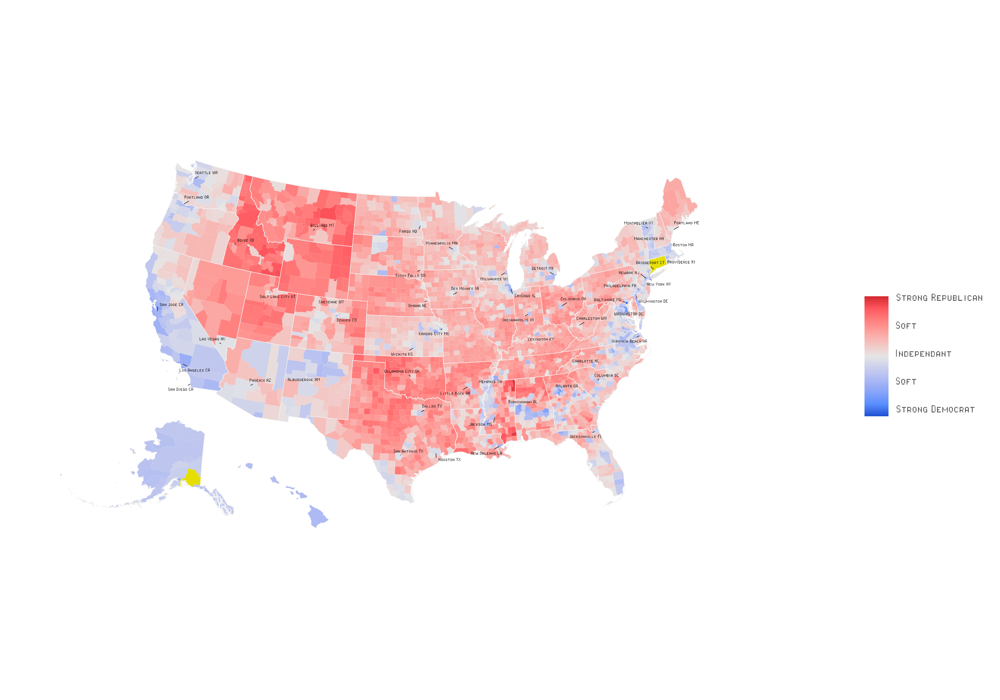

Initiation à l’analyse de données avec R
Les logiciels d’analyse de données


Pourquoi R?

Open source
- Gratuit
- Collaboratif
- Communauté active
- Stackoverflow
- r-bloggers
- Adapté aux besoins des utilisateurs
Pourquoi R?

Packages
- Offre une extension des fonctionnalités de base presque infinie
- Peux répondre à des besoins très spécifiques
- 21,744 packages sur CRAN (Comprehensive R Archive Network)
- Principal dépôt où sont hébergés les packages R
- Beaucoup plus sur GitHub
- En plus de CRAN, de nombreux chercheurs publient leurs packages sur GitHub, une plateforme de partage de code
Pourquoi R?

Reproductibilité
- Rendre les analyses reproductibles
- Permet de partager les analyses
- Les scripts R permettent de partager facilement le travail
- Permet de retracer les erreurs
- Partager le code
- Encourage la transparence et la collaboration dans la recherche
Pourquoi R?

Très utilisé en science sociale
- Beaucoup de ressources
- Beaucoup de tutoriels orientés vers les sciences sociales
- Datacamp
- Coursera
- Datanovia
Bref… important d’utiliser les mêmes outils que les chercheurs dans votre domaine
La CLESSN
 Chaire de leadership en enseignement des sciences sociales numériques (CLESSN)
Chaire de leadership en enseignement des sciences sociales numériques (CLESSN)
- Titulaire: Yannick Dufresne
- Objectif: Développer des compétences en science des données pour les étudiants en sciences sociales à travers des projets de recherche et des formations


R : Au-delà de l’analyse de données
- R ne se limite pas à l’analyse statistique, il peut aussi être utilisé pour développer des applications web interactives
 {absolute top=0 left=0 width=“20%”}
{absolute top=0 left=0 width=“20%”}
Mais derrière tout ça… R
- Voici l’envers du décor :
 {absolute top=0 left=0 width=“20%”}
{absolute top=0 left=0 width=“20%”}
Analyse textuelle
- Analyse de ton
- Est-ce que le texte est positif ou négatif?

Concept important : Le chemin d’arborescence
- À tout moment vous devez savoir où vous êtes dans votre ordinateur pour pouvoir importer des données, exporter des graphiques ou mettre des fichiers en relation
- Votre R est toujours ouvert dans un dossier, et donc vous devez savoir où il est pour pouvoir importer des données
- La fonction
getwd()dans R permet de savoir où vous êtes

Importer des données
Autres fonctions pour importer des données dépendamment du format:
df <- readxl::read_excel("chemin/vers/data.xlsx")df <- readRDS("chemin/vers/data.rds")

Bonnes pratiques
- Nommer vos objets de façon explicite
- Commenter votre code
- Organiser votre code

Git
- Créé par Linus Torvalds en 2005
- Gestion de version
- Permet de suivre l’évolution d’un projet
- Utile pour tout ce qui est texte, incluant les articles et les présentations
- Enregistre tous les changements faits depuis la création du projet (.git)
- Reproductibilité et transparence

Comment l’utiliser?